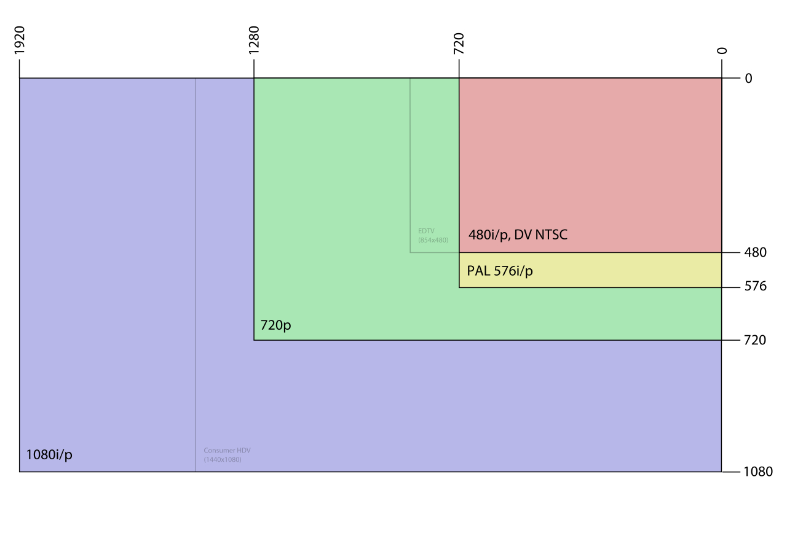

Стандарты разложения

Основные стандарты разложения
Стандарты разложения цифрового видео определяют следующие параметры:
- количество видимых строк. Для записи и передачи цифрового видео, также как и аналогового, применяют разложение его на отдельные строки, то есть последовательное сканирование и передача
элементов каждой горизонтальной строки. Для видео и телевидения стандартной чёткости эти значения равны 480 или 576 строк, с повышенной четкостью — 720.
Для видео высокой чёткости (англ. HD) — 1080.
- режим развёртки («p» или «i»). Для сокращения передаваемого потока вдвое применяется чересстрочная развёртка, при которой каждый кадр передается двумя последовательными полукадрами —
полями. Поле состоит из телевизионных строк. Одно поле содержит чётные строки, второе — нечётные. Такой режим развёртки обозначается значком «i» от англ. interlace. Такой режим был разработан в
эпоху аналогового телевидения, когда не было возможности передавать сигналы с широкой полосой пропускания. Также первые цифровые форматы и даже HD использовали этот режим для уменьшения видеопотока.
Недостатком такого режима является наличие эффекта «гребёнки» на движущихся объектах при воспроизведении на устройствах отображения с прогрессивной (построчной) развёрткой, для устранения которого
применяют деинтерлейсинг. При построчной передаче всего кадра таких проблем не возникает, однако ширина полосы пропускания или поток такого видеосигнала будет вдвое большими. При прогрессивной развертке
частоты дискретизации для схемы 4:2:2 будут равными для Y' — 27 МГц, для Сr/Сb — 13,5 МГц.
- частота кадров — частота смены кадров за единицу времени, как правило, за секунду. Из-за различных стандартов, принятых в разных странах, в телевизионном вещании,
кино и видео производстве появилось значительное число различных стандартов, которые могут частично или полностью поддерживать различные видеоустройства. Основными являются:
- на основе форматов семейства PAL: 50i, 25p, 50p
- на основе форматов семейства NTSC: 60i, 29.97p, 30p, 59.94p, 60p
- киноформаты: 23.98p, 24p
Также немаловажным параметром является соотношение сторон кадра видеоизображения. Типичными форматами для видео являются стандартный 4:3 (1,33:1) или широкоэкранный — 16:9 (1,77:1).
Широкоэкранный режим иногда записывается на видео со сжатием по горизонтали до 4:3, а при воспроизведении растягивается. Такая технология называется цифровым анаморфированием и при записи
широкоэкранных фильмов дает возможность более эффективно использовать кадр телевидения стандартной четкости. Корректное отображение закодированного формата обеспечивается его автоматическим
распознаванием при помощи служебного бита AR (англ. Aspect Ratio) и пакетов WSS (англ. Wide Screen Signaling) или AFD (англ. Active Format Description). Вся эта информация о формате изображения
и расположении экранных каше (англ. Bar Data) передаётся в 23-й строке кадрового гасящего импульса видеопотока.